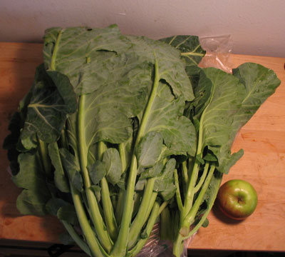
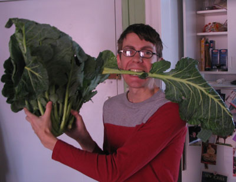

Collard greens from FreshDirect
When you order collard greens from FreshDirect, they show you a dainty bunch of greens and estimate that its weight will be 1.5 pounds. After ordering them twice, I think I’ve learned my lesson:

FreshDirect must have machines with giant claws packing leafy greens, because each time I ordered I ended up with nearly four pounds. Neither time could I fit the bunch in my crisper, and like last time, there’s just no way we’re going to finish eating all of this. I complained to FD last time and never heard back. I didn’t want a refund, but I wanted them to let someone in the produce department know that they were overstuffing. As you can see, they gave me one huge bunch and two smaller bunches. Who do they think they’re fooling?
n8, a southern boy at heart, was gracious enough to further illustrate the immensity of our collards:

Thanks, n8.
Comments
I had to stop typing because I was laughing so hard when I saw that photo! Excellent post!
(By the way while Toronto does have some grocers who deliver directly to consumers, we’re still developing in that area … nice to see what’s going on in other cities.)
But that photo is too funny!
Grocery delivery has its ups and downs. I’m glad you like the photo!
That quantity of greens really cooks down when you stew them a long time Southern (or Italian) style. I like my collards nice and tender but most restaurants seem to serve them tough and chewy.
To me the daunting part about fresh greens is all the work involved in washing and trimming them; it seems to take hours and you’re up to your armpits in cold water.
Mommy
Maybe I just had some clean greens, but these only needed one rinse and spin. Am I going to die of dirt poisoning?
FreshDirect may give them a preliminary wash; I’m used to greens from the farmer’s market and they always seem to be the muddiest vegetable on the table. But why spin? You’re braising them anyway.
That’s very true. I shall no longer spin. You might be right about FD. Although their spinach can be absolutely filthy and take more than an hour of soaking to wash.
I always thought that the most daunting thing about cooking greens was the washing and chopping. Really discouraged me from buying them even though I know how good for you they are. Our grocery store now sells them washed and chopped and ready to cook. So nice- we have kale at least once a week. Love your blog Leland!
Great, Aunt Sue! Yes the bagged greens are very tempting. I’ve been buying bagged spinach because I’m tired of washing for an hour and still having dirt.
Thank you for making me laugh. I couldn’t tell quite how outrageously large they were from the first picture, but that second one has my whole office in stiches.
Add a comment